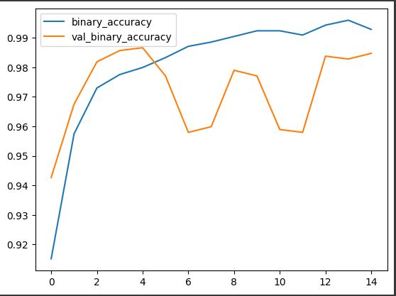

Intoduction
During my honors year, I embarked on an ambitious project aimed at developing an automated system for pneumonia detection from chest X-rays using deep learning techniques. Pneumonia, a respiratory infection characterized by inflammation of the lungs, remains a significant global health concern. With the advancements in deep learning and the availability of large datasets, I sought to leverage these technologies to assist medical professionals in accurate and efficient pneumonia diagnosis.
Project overview and model development
The objective of my project was to train and evaluate three deep learning models—VGG16, ResNet50v2, and a customized convolutional layer model with 20 layers—for pneumonia detection. I utilized a publicly available dataset comprising thousands of annotated chest X-ray images from patients with and without pneumonia. By training these models on this dataset, I aimed to achieve high accuracy in distinguishing between normal chest X-rays and those indicating pneumonia. I incorporated various data augmentation techniques to increase the diversity and variability of the training data.
To build the deep learning models, I employed the Python programming language and popular deep learning libraries such as TensorFlow and Keras. For the VGG16 and ResNet50v2 architectures, I utilized transfer learning and fine-tuning techniques. This involved initializing the models with pre-trained weights on ImageNet and then fine-tuning the models on the pneumonia dataset. By adapting the models to the specific pneumonia detection task, I aimed to improve their performance. During the fine-tuning process, I set the learning rate to 0.0001 and used the Adam optimizer. This combination allowed the models to learn from the pneumonia dataset while preserving the valuable features learned from the large-scale ImageNet dataset. The fine-tuning process helped optimize the models' performance specifically for pneumonia detection, enhancing their accuracy and sensitivity.
